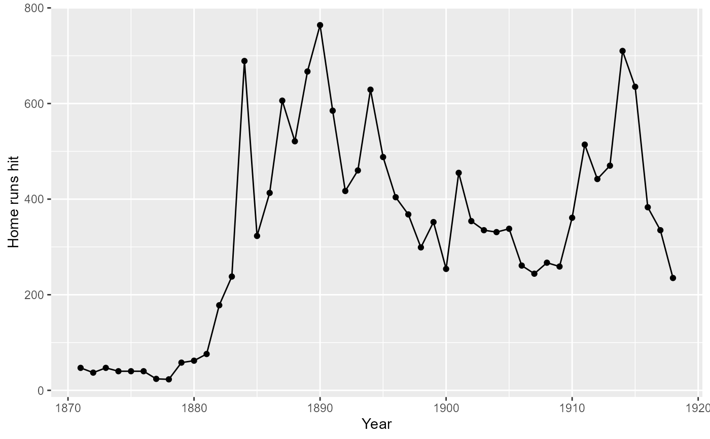

Batting table
Batting.RdBatting table - batting statistics
Usage
data(Batting)Format
A data frame with 113799 observations on the following 22 variables.
playerIDPlayer ID code
yearIDYear
stintplayer's stint (order of appearances within a season)
teamIDTeam; a factor
lgIDLeague; a factor with levels
AAALFLNLPLUAGGames: number of games in which a player played
ABAt Bats
RRuns
HHits: times reached base because of a batted, fair ball without error by the defense
X2BDoubles: hits on which the batter reached second base safely
X3BTriples: hits on which the batter reached third base safely
HRHomeruns
RBIRuns Batted In
SBStolen Bases
CSCaught Stealing
BBBase on Balls
SOStrikeouts
IBBIntentional walks
HBPHit by pitch
SHSacrifice hits
SFSacrifice flies
GIDPGrounded into double plays
Source
Lahman, S. (2024) Lahman's Baseball Database, 1871-2023, 2024 version, http://www.seanlahman.com/
See also
battingStats for calculating batting average (BA) and other derived statistics
baseball for a similar dataset, but a subset of players who played 15 or more seasons.
Baseball for data on batting in the 1987 season.
Examples
data(Batting)
head(Batting)
#> playerID yearID stint teamID lgID G AB R H X2B X3B HR RBI SB CS BB SO IBB
#> 1 aardsda01 2004 1 SFN NL 11 0 0 0 0 0 0 0 0 0 0 0 0
#> 2 aardsda01 2006 1 CHN NL 45 2 0 0 0 0 0 0 0 0 0 0 0
#> 3 aardsda01 2007 1 CHA AL 25 0 0 0 0 0 0 0 0 0 0 0 0
#> 4 aardsda01 2008 1 BOS AL 47 1 0 0 0 0 0 0 0 0 0 1 0
#> 5 aardsda01 2009 1 SEA AL 73 0 0 0 0 0 0 0 0 0 0 0 0
#> 6 aardsda01 2010 1 SEA AL 53 0 0 0 0 0 0 0 0 0 0 0 0
#> HBP SH SF GIDP
#> 1 0 0 0 0
#> 2 0 1 0 0
#> 3 0 0 0 0
#> 4 0 0 0 0
#> 5 0 0 0 0
#> 6 0 0 0 0
require("dplyr")
## Prelude: Extract information from Salaries and People
## to be merged with the batting data.
# Subset of Salaries data
salaries <- Salaries %>%
select(playerID, yearID, teamID, salary)
# Subset of People table (player metadata)
peopleInfo <- People %>%
select(playerID, birthYear, birthMonth, nameLast,
nameFirst, bats)
# Left join salaries and peopleInfo to batting data,
# create an age variable and sort by playerID, yearID and stint
# Returns an ignorable warning.
batting <- battingStats() %>%
left_join(salaries,
by =c("playerID", "yearID", "teamID")) %>%
left_join(peopleInfo, by = "playerID") %>%
mutate(age = yearID - birthYear -
1L *(birthMonth >= 10)) %>%
arrange(playerID, yearID, stint)
## Generate a ggplot similar to the NYT graph in the story about Ted
## Williams and the last .400 MLB season
# http://www.nytimes.com/interactive/2011/09/18/sports/baseball/WILLIAMS-GRAPHIC.html
# Restrict the pool of eligible players to the years after 1899 and
# players with a minimum of 450 plate appearances (this covers the
# strike year of 1994 when Tony Gwynn hit .394 before play was suspended
# for the season - in a normal year, the minimum number of plate appearances is 502)
eligibleHitters <- batting %>%
filter(yearID >= 1900 & PA > 450)
# Find the hitters with the highest BA in MLB each year (there are a
# few ties). Include all players with BA > .400, whether they
# won a batting title or not, and add an indicator variable for
# .400 average in a season.
topHitters <- eligibleHitters %>%
group_by(yearID) %>%
filter(BA == max(BA)| BA >= .400) %>%
mutate(ba400 = BA >= 0.400) %>%
select(playerID, yearID, nameLast,
nameFirst, BA, ba400)
# Sub-data frame for the .400 hitters plus the outliers after 1950
# (averages above .380) - used to produce labels in the plot below
bignames <- topHitters %>%
filter(ba400 | (yearID > 1950 & BA > 0.380)) %>%
arrange(desc(BA))
# Variable to provide a vertical offset to certain
# labels in the ggplot below
bignames$yoffset <- c(0, 0, 0, 0, 0.002, 0, 0, 0,
0.001, -0.001, 0, -0.002, 0, 0,
0.002, 0, 0)
# Produce the plot
require("ggplot2")
#> Loading required package: ggplot2
ggplot(topHitters, aes(x = yearID, y = BA)) +
geom_point(aes(colour = ba400), size = 2.5) +
geom_hline(yintercept = 0.400, size = 1, colour = "gray70") +
geom_text(data = bignames, aes(y = BA + yoffset,
label = nameLast),
size = 3, hjust = 1.2) +
scale_colour_manual(values = c("FALSE" = "black", "TRUE" = "red")) +
xlim(1899, 2015) +
xlab("Year") +
scale_y_continuous("Batting average",
limits = c(0.330, 0.430),
breaks = seq(0.34, 0.42, by = 0.02),
labels = c(".340", ".360", ".380", ".400", ".420")) +
geom_smooth() +
theme(legend.position = "none")
#> Warning: Using `size` aesthetic for lines was deprecated in ggplot2 3.4.0.
#> ℹ Please use `linewidth` instead.
#> `geom_smooth()` using method = 'loess' and formula = 'y ~ x'
#> Warning: Removed 11 rows containing non-finite outside the scale range
#> (`stat_smooth()`).
#> Warning: Removed 11 rows containing missing values or values outside the scale range
#> (`geom_point()`).
##########################################################
# after Chris Green,
# http://sabr.org/research/baseball-s-first-power-surge-home-runs-late-19th-century-major-leagues
# Total home runs by year
totalHR <- Batting %>%
group_by(yearID) %>%
summarise(HomeRuns = sum(as.numeric(HR), na.rm=TRUE),
Games = sum(as.numeric(G), na.rm=TRUE))
# Plot HR by year, pre-1919 (dead ball era)
totalHR %>% filter(yearID <= 1918) %>%
ggplot(., aes(x = yearID, y = HomeRuns)) +
geom_line() +
geom_point() +
labs(x = "Year", y = "Home runs hit")

# Take games into account
totalHR %>% filter(yearID <= 1918) %>%
ggplot(., aes(x = yearID, y = HomeRuns/Games)) +
geom_line() +
geom_point() +
labs(x = "Year", y = "Home runs per game played")
# Widen perspective to all years from 1871
ggplot(totalHR, aes(x = yearID, y = HomeRuns)) +
geom_point() +
geom_path() +
geom_smooth() +
labs(x = "Year", y = "Home runs hit")
#> `geom_smooth()` using method = 'loess' and formula = 'y ~ x'
# Similar plot for HR per game played by year -
# shows several eras with spikes in HR hit
ggplot(totalHR, aes(x = yearID, y = HomeRuns/Games)) +
geom_point() +
geom_path() +
geom_smooth(se = FALSE) +
labs(x = "Year", y = "Home runs per game played")
#> `geom_smooth()` using method = 'loess' and formula = 'y ~ x'